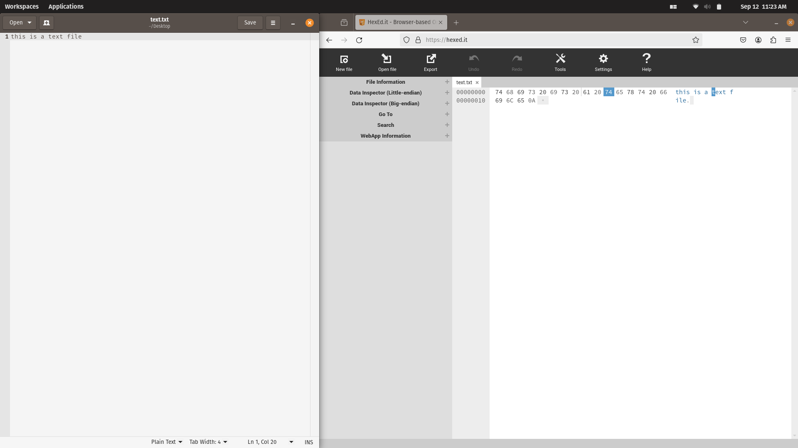
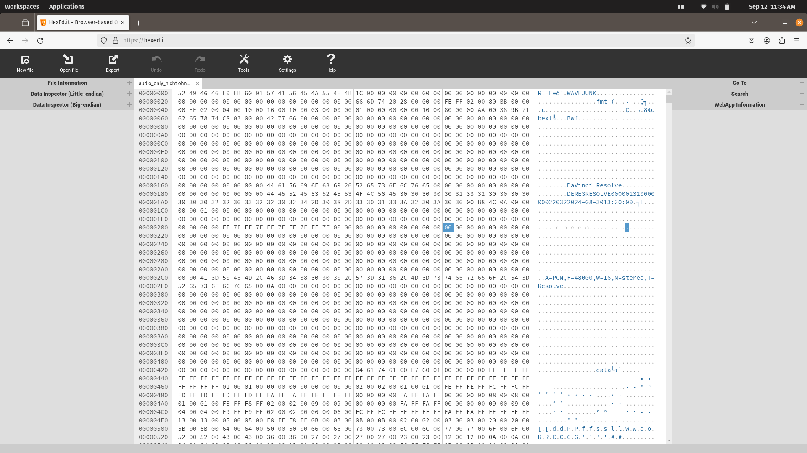
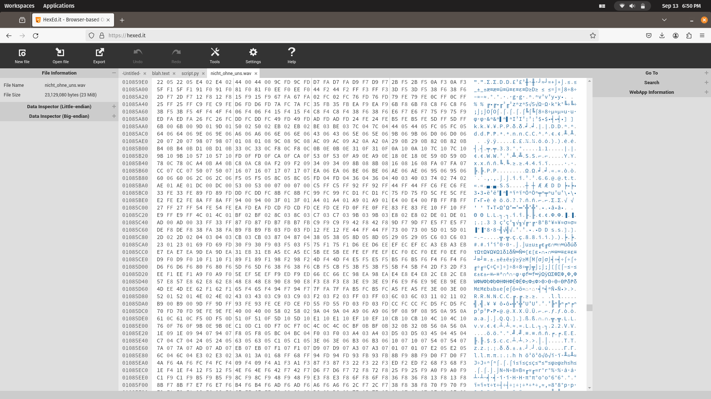
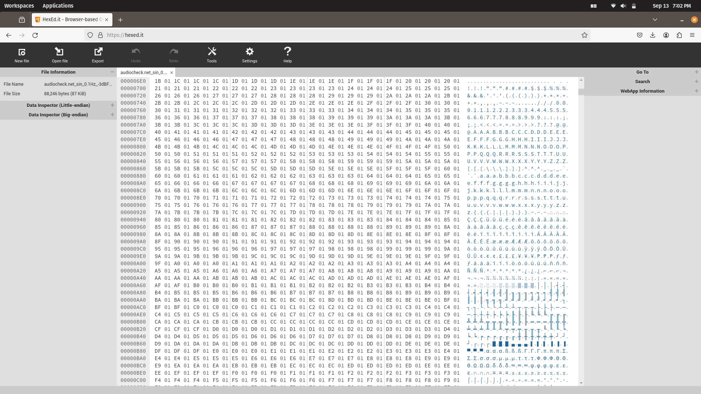
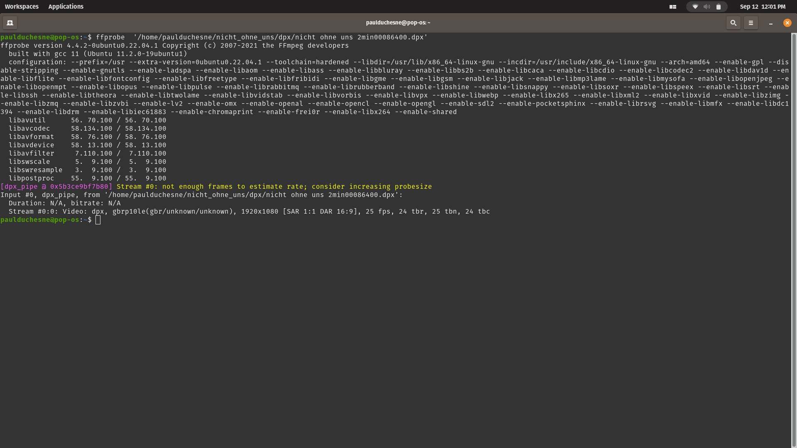

class: center, middle, titlepage ### TUE03: *Validating files.* --- class: contentpage ### **Agenda** 1. RAWcook the files 2. Intro to Metadata 3. embARC 4. FFprobe 5. MediaInfo 6. MediaConch 7. MediaTrace --- class: contentpage ### **1. RAWcook the files** RAWcooked from MediaArea is a CLI only encoding tool that converts image sequences and audio to FFV1 video codec and FLAC audio codec, in a Matroska wrapper. RAWcooked demuxes and decodes FFV1 Matroska files back to a bit-by-bit perfect copy of the original image sequence. .center[<img src="https://raw.githubusercontent.com/digitensions/summer-school-2024-local/main/wednesday/images/Screenshot 2024-09-05 at 20.18.42.png" width="1000">] Image courtesy of BFI National Archive --- class: contentpage ### **1. RAWcook the files** RAWcooked has a very helpful `--all` command which we can use today to encode the DPX sequence ```sh rawcooked --all /path_to_seqence/dpx_sequence/ >> encoding_data.log ``` The command contains several others, all essential for long-term preservation: > --encode/decode > --info > --conch > --hash > --coherency > --check-padding > --check > --accept-gaps <font color="orange">Practise:</font> RAWcooked encode the DPX sequence using the `-all` command. --- class: contentpage ### **2. Intro to Metadata** File metadata (metadata literally meaning "data about data") are all the attributes of a file which are not the file content/media itself (or "payload"), but are stored in the file. These can be things like video framerate, audio channels, creation and modification timestamps. For audiovisual archiving this can get significantly more involved as certain formats (e.g. DPX) allow the capture of an extensive range of information about the file which we may wish to view, validate, or edit. --- class: tangentpage ### **Tanget: What is a file!!** When we talk about "files", we are really talking about two different things. For this section it would be useful to have a hex editor to be able to open the file in an objective way, and see what is inside. https://hexed.it is an good online resource, although will presumably be unhappy if you try any files which are too big. --- class: tangentpage ### **Tanget: What is a file!!** On the one hand we have text documents, like "txt" (or "py"!) which are just text. There is no additional data in the file. Also note how the same letters result in the same binary encodings. .left[] --- class: tangentpage ### **Tanget: What is a file!!** When we open up a wav file from the Bundesarchiv film scan, we see something different. --- class: tangentpage ### **Tanget: What is a file!!** .left[] A guide to what we are seeing! The first four letters are called the "magic number" (no joke) which tells the application what type the file is ("RIFF"). Underneath we can see text which tell us interesting "context" (metadata) on the file. These seem randomly placed, but they are in very specific locations, and these are defined in the file specification. https://en.wikipedia.org/wiki/WAV --- class: tangentpage ### **Tanget: What is a file!!** Underneath is the audio expressed as "binary data", which allows us the flexibilty for the expression of any file: sound, video, 3d models etc etc. .left[] --- class: tangentpage ### **Tanget: What is a file!!** We are not really able to engage with the media directly like this, however a staple of the "glitch art" toolbox would be to open files like this and then do "find replace" functions. https://en.wikipedia.org/wiki/Glitch_art https://en.wikipedia.org/wiki/Databending --- class: tangentpage ### **Tanget: What is a file!!** But if we have a lossless file, we can sometimes see where the nature of the encoded information forms appreciable patterns. .left[] This is a very low frequency sinewave, it is literally encoded in the file as values which go up, then down, then up. --- class: contentpage ### **3. embARC** embARC is from the Library of Congress/FADGI and is the result of concentrated work around working with embedded metadata in DPX files. https://www.digitizationguidelines.gov/guidelines/digitize-DPXembedding.html It is a tool to work specifically with DPX metadata. --- class: contentpage ### **3. embARC** Download the 'embARC Java Jar' file here: https://www.digitizationguidelines.gov/guidelines/embARC.html Note that embARC is a java application which we run as a "jar". This can also be thought of as a similar paradigm as with Python: Python interpreter runs a Python script, Java interpreter runs a Jar file. ```sh java -jar applications/embARC-0.4.0.jar media/dpx/0088860.dpx ``` `-print` will simply print out the existing metadata. There are a lot of fields in DPX files! ```sh java -jar applications/embARC-0.4.0.jar media/dpx/0088860.dpx -print ``` embARC also has the capacity for conformance checks, where we define what fields need to be populated and embARC ensures they are present. --- class: contentpage ### **4. FFprobe** FFprobe is a sibling tool of FFmpeg and also allows the extraction of metadata of audiovisual material. This can either be printed to the terminal ```sh ffprobe media/dpx/0088860.dpx ``` .left[] --- class: contentpage ### **4. FFprobe** We can also extract metadata as JSON, which is an explicitly machine readable format for data storage. ```sh ffprobe -v quiet -print_format json -show_format -show_streams media/dpx/0088860.dpx ``` --- class: tangentpage ### **Tanget: Machine Readable Data** When extracting metadata, or working with data more generally (data in the sense of "encoded knowledge" not binary files) we are going to be using machine readable "serialisations". The most common of these are CSV, JSON and XML. --- class: tangentpage ### **Tanget: Machine Readable Data** You would likely already be familiar with CSV, which is what is called tabular data, exactly like Excel. There are columns up the top, rows, and data inbetween. This is used when you have one-to-one data relationships. <table style="border-collapse: collapse; border: 1px solid black;"> <tr style="border: 1px solid black;"> <td style="border: 1px solid black;">Name</td> <td style="border: 1px solid black;">Eye Colour</td> <td style="border: 1px solid black;">City</td> <td style="border: 1px solid black;">Pet</td> </tr> <tr style="border: 1px solid black;"></tr> <td style="border: 1px solid black;">Paul</td> <td style="border: 1px solid black;">Blue</td> <td style="border: 1px solid black;">Canberra</td> <td style="border: 1px solid black;">Chupa Chups (Cat)</td> </tr> <tr style="border: 1px solid black;"> <td style="border: 1px solid black;">Joanna</td> <td style="border: 1px solid black;">???</td> <td style="border: 1px solid black;">???</td> <td style="border: 1px solid black;">???</td> </tr> </table> We call these formats "machine readble" because machines can use them to easily get answers to "questions". For example if you had a string "Paul is a person with blue eyes, a cat called Chupa Chups and lives in Canberra" and you collected hundreds of similar statements about people it would be very hard to extract just the eye colour, or pet information. Having said that, machine learning systems are actually quite good at converting between human and machine-readable data, so we might see this distinction breaking down in the next few decades. --- class: tangentpage ### **Tanget: Machine Readable Data** But what happens if I get another Cat? What happens if I want to store the new Cat's eye colour!!! --- class: tangentpage ### **Tanget: Machine Readable Data** JSON exists to solve this problem. There are two key concepts to understand: 1. key/value pairs ```json {"Name":"Paul"} ``` 2. arrays ```json {"Pets": ["Chupa Chups (Cat)", "New Cat (Cat)"]} ``` --- class: tangentpage ### **Tanget: Machine Readable Data** Using these simple concepts you can build out quite elaborate data structures: ```json { "Name": "Paul", "Eye Colour": "Blue", "City": "Canberra", "Pets": [ { "Type": "Cat", "Name": "Chupa Chups", "Birthday": "2013-07-12" }, { "Type": "Cat", "Name": "New Cat", "Birthday": "2026-02-17" } ] }``` JSON intergrates extremely well with Python as it almost identical to the Python `dictionary` concept, which we will see later on. --- class: tangentpage ### **Tanget: Machine Readable Data** XML is identical concepptualy to JSON, so you can easily convert between the two. It is much older, so you are liikely to find it in older systems. But it is still very much around!!! ```xml <?xml version="1.0" encoding="UTF-8" ?> <root> <Name>Paul</Name> <Eye Colour>Blue</Eye Colour> <City>Canberra</City> <Pets> <Type>Cat</Type> <Name>Chupa Chups</Name> <Birthday>2013-07-12</Birthday> </Pets> <Pets> <Type>Cat</Type> <Name>New Cat</Name> <Birthday>2026-02-17</Birthday> </Pets> </root> ``` --- class: contentpage ### **5. MediaInfo** MediaInfo from MediaArea has an online version of the software available for no fuss metadata extraction. It's also available as CLI software or in a GUI. .left[<img src="https://raw.githubusercontent.com/digitensions/summer-school-2024-local/main/tuesday/images/Screenshot 2024-08-26 at 15.08.00.png" width="600">] --- class: contentpage ### **5. MediaInfo** The metadata is structured in a form that's easy to read and can be exported in several different formats including HTML, XML, JSON, EBUCore an PBCore (more viewing options in the GUI). The metadata is structured into groups and output in this order: - General - Video / Image - Audio - Text - Other - Menu Mediainfo supports most audiovisual formats, and can alter over time with sponsorship. <font color="orange">Practise:</font> Call the basic command to view metadata delivered in key/value pairs ```sh mediainfo file.mov ``` --- class: contentpage ### **5. MediaInfo** .left[<img src="https://raw.githubusercontent.com/digitensions/summer-school-2024-local/main/tuesday/images/Screenshot.png" width="1140">] --- class: contentpage ### **5. MediaInfo** There's no manual for MediaInfo but the Help can give you a lot of information about flags and arguments ```sh mediainfo --Help ``` To return a full set of metadata for a file use the `-f` of `--Full` flag and capture to log file ```sh mediainfo -f file.ext mediainfo -f file.ext --LogFile='/mnt/path_to_folder/file.log' ``` The `Output` flag formats the full metadata and can be pipe to other tools for pretty printing if needed ```sh mediainfo file.ext --Output=HTML mediainfo file.ext --Output=PBCore / --Output=PBCore2 medininfo file.ext --Output=EBUCore mediainfo file.ext --Output=XML | xmllint --format - mediainfo file.ext --Output=JSON | python3 -m json.tool mediainfo file.ext --Output=EBUCore_JSON | python3 -m json.tool ``` <font color="orange">Practise:</font> Try the different output options --- class: contentpage ### **5. MediaInfo** The `--Info_Parameters` flag allows you view the complete list of field names available in MediaInfo along with descriptions ```sh mediainfo --Info_Parameters ``` With these parameters you can create specific commands to target data in the file very directly, like requesting the `Duration` from the `General` section of the metadata. We use this command a lot in our code, as this is the best way to identify if a file is truncated or not ```sh mediainfo --Output=‘General;%Duration%’ file.ext ``` The `Output` command has it's own help that provides alternative commands for capturing specific metadata ```sh mediainfo --Help-Output ``` <font color="orange">Practise:</font> Try this command with different commands to retrieve other fields listed in `--Info_Parameters` --- class: contentpage ### **6. MediaConch** MediaConch is an open-source software project consisting of a toolset that aims to develop the standardisation and validation of preservation-level audiovisual files used within archives and communities .left[<img src="https://raw.githubusercontent.com/digitensions/summer-school-2024-local/main/tuesday/images/Screenshot 2023-09-28 at 19.42.20.png" width="600">] --- class: contentpage ### **6. MediaConch** A MediaConch policy is an XML document, this is the BFI's RAWcooked FFV1 Matroska policy: .left[<img src="https://raw.githubusercontent.com/digitensions/summer-school-2024-local/main/tuesday/images/Screenshot 2024-08-26 at 17.23.42.png" width="1200">] --- class: contentpage ### **6. MediaConch** To run a policy against a file you first need to download the policy into a .XML file then run this command ```sh mediaconch -p policy.xml rawcooked_ffv1.mkv ``` If you policy passes you will have the word `pass!` printed to your CLI, followed by the path to the file you assessed. If your policy fails it will return `fail!`. .left[<img src="https://raw.githubusercontent.com/digitensions/summer-school-2024-local/main/tuesday/images/Screenshot 2024-08-26 at 17.46.30.png" width="500">] <font color="orange">Practise:</font> Download the public [BFI FFV1 Matroska policy](https://mediaarea.net/MediaConchOnline/publicPolicies) above using the `Export` button. Save it as `policy.xml` and run it against your RAWcooked FFV1 Matroska --- class: contentpage ### **6. MediaConch** The GUI and MediaConch online issue policy report which cleanly demonstrates the points at which the policy failed, and they support batch validation and review .left[<img src="https://raw.githubusercontent.com/digitensions/summer-school-2024-local/main/tuesday/images/MediaConch_MKV_validate.png" width="700">] --- class: contentpage ### **6. MediaConch** To create your own DPX policy you can use MediaConch `--CreatePolicy` flag which is really useful for starting the process of building policies. ```sh mediaconch --CreatePolicy dpx_file.dpx ``` The policy it creates will contain a mixture of general DPX rules, and rules specific to this file like it's creation time. To check more of your DPX images you wouldn't want file specific metadata relating to creation time or paths, but the general data. <font color="orange">Practise:</font> Create a DPX policy using one of your DPX and the command above. Copy the text into a new file called dpx_policy.xml, remove any file specific rules and then run it against one or two different DPX files using: ```sh mediaconch -p dpx_policy.xml different_dpx_file.dpx ``` --- class: contentpage ### **6. MediaConch** MediaConch is also above to correct bit flip in the FFV1 codec, and fix segment size issues in Matroska files. - **Bit flip** refers to a memory error (soft error) where a random bit can flip from 0 to 1, or vice versa. It's not too common, but it can happen to any file stored over time. - **Matroska segment size errors** can occassionally show a '0' instead of the actual size of the segment in bytes. MediaArea website has a guide to [MediaConch Fixity](https://mediaarea.net/MediaConch/Documentation/Fixity) where sample files with these errors can be downloaded and fixes applied using this MediaConch command: ```sh mediaconch file.mkv --TryToFix --Force ``` <font color="orange">Practise:</font> Download the two FFV1 Matroska samples from the website and run this command with the downloaded filepath. Review the downloaded file in FFplay, and then the '.fixed' file to see the difference. The before and after can also be view in MediaTrace or a Hex editor to see the changes to the binary data of the file. ??? Keep the bit flip example for later! --- class: contentpage ### **7. MediaTrace** Both MediaConch and MediaInfo can generate a deeply detailed report called MediaTrace. This is a technical report that demonstrates the binary architecture of an audiovisual file, set out in blocks. ```xmllint <block offset="282239364" name="Track" size="1712"> <block offset="282239364" name="Header" size="8"> <data offset="282239364" name="Size">1712</data> </block> <block offset="282239372" name="Track Header" info="3" info2="10000 ms" size="92"> <block offset="282239372" name="Header" size="8"> <data offset="282239372" name="Size">92</data> <data offset="282239376" name="Name">tkhd</data> </block> <data offset="282239380" name="Version">0</data> <data offset="282239381" name="Flags">3</data> <data offset="282239384" name="Creation time" info="">0</data> <data offset="282239388" name="Modification time" info="">0</data> <data offset="282239392" name="Track ID">3</data> <data offset="282239400" name="Duration" info="10000 ms">10000</data> <data offset="282239412" name="Layer">0</data> <data offset="282239414" name="Alternate group">0</data> <data offset="282239416" name="Volume" info="0.000">0</data> <data offset="282239456" name="Track width">720.000</data> <data offset="282239460" name="Track height">576.000</data> </block> ``` --- class:contentpage ### **7. MediaTrace** To create a MediaTrace output in MediaInfo and MediaConch CLI: ```sh mediainfo -f --Details=1 —Output=XML file.ext mediaconch -tt -fx file.ext ``` You can also create a MediaTrace report in MediaConch GUI by selecting `Trace` and `XML`. To make very detailed MediaConch policies you can use the blocks of a MediaTrace output to specifically target metadata in the binary data, useful if you don't have the field available to search in MediaConch software. Here is an example of a rule written in a MediaConch XML policy that uses MediaTrace to inform the field identification: .left[<img src="https://raw.githubusercontent.com/digitensions/summer-school-2024-local/main/tuesday/images/mms_example.png" width="1040">] --- class:contentpage .center[<img src="https://raw.githubusercontent.com/digitensions/summer-school-2024-local/main/tuesday/images/map_from_trace.png" width="380">] --- class:contentpage ### **7. MediaTrace** To create a MediaTrace output in MediaInfo and MediaConch CLI: ```sh mediainfo -f --Details=1 —Output=XML file.ext mediaconch -tt -fx file.ext ``` You can also create a MediaTrace report in MediaConch GUI by selecting `Trace` and `XML`. To make very detailed MediaConch policies you can use the blocks of a MediaTrace output to specifically target metadata in the binary data, useful if you don't have the field available to search in MediaConch software. Here is an example of a rule written in a MediaConch XML policy that uses MediaTrace to inform the field identification: .left[<img src="https://raw.githubusercontent.com/digitensions/summer-school-2024-local/main/tuesday/images/mms_example.png" width="1040">]